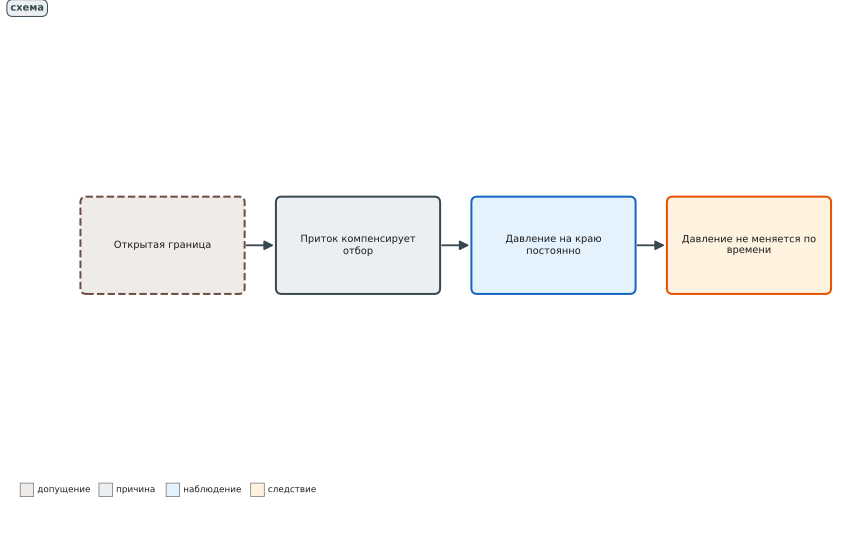
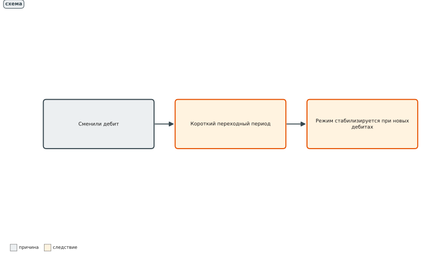

Стр. 78 · b) Semi Steady State condition
Fig. 5.4 Radial flow under steady state conditions.
The Basic Differential Equation for Radial Flow in a Porous Medium; the constant terminal rate solutionШаг 10 из 21
В книге: «Условия решения» стр. 78
Опирается на: шаг 8 «Почему давление падает одинаково» (предпосылка), шаг 7 «Когда пласт кажется бесконечным» (предпосылка)
При открытой границе приток может уравновесить постоянную добычу.
Тогда давление больше не меняется со временем, пока режим остаётся прежним.
Пороговая идея. Открытая подпитываемая граница может уравновесить отбор. Это не то же самое, что закрытый пласт с одинаковым снижением. модель






Проверяем, что граница открыта.
Допущения: Схемы и относительные оси условны; реальные замеры не использованы..
После переходного периода для установившегося режима рассматривают открытую внешнюю границу. Предполагают, что при постоянной добыче приток через открытую границу полностью компенсирует отбор. На внешней границе давление задано и постоянно. Давление перестаёт меняться по времени во всей области. стр. 78
«The steady state condition applies, after the transient period, to a well draining a cell which has a completely open outer boundary»
«It is assumed that, for a constant rate of production, fluid withdrawal from the cell will be exactly balanced by fluid entry across the open boundary and therefore,»
«$$p = p_e = \text{constant, at } r = r_e \tag{5.14}$$»
«$$\text{and } \frac{\partial p}{\partial t} = 0 \text{ for all } r \text{ and } t \tag{5.15}$$»
Такое условие соответствует естественной водной подпитке или закачке вытесняющей жидкости. В пласте оба стабилизированных режима могут реализовываться лишь приближённо. На практике применяют псевдоустановившуюся формулу и при медленном изменении дебита и границы. стр. 78
«This condition is appropriate when pressure is being maintained in the reservoir due to either natural water influx or the injection of some displacing fluid (refer Chapter 10).»
«It should be noted that the semi steady state and steady state conditions may never be fully realised in the reservoir»
«For instance, semi steady state flow equations are frequently applied when the rate, and consequently the position of the no-flow boundary surrounding a well, are slowly varying functions of time»
Производственные и закачные установки рассчитаны на постоянные дебиты, поэтому приближение часто полезно. Смена дебита вызывает новый короткий переходный этап до стабилизации. Так бывает, например, при остановке скважины на ремонт. стр. 78
«Nevertheless, the defining conditions specified by equ. (5.7) and (5.15) are frequently approximated in the field since both production and injection facilities are usually designed to operate at constant rates»
«If the production rate of an individual well is changed, for instance, due to closure for repair or increasing the rate to obtain a more even fluid withdrawal pattern throughout the reservoir, there will be a brief period when transient flow conditions prevail followed by stabilized flow for the new distribution of individual well rates.»
Постоянное давление на внешней границе. стр. 78
| Обозначение | Что это | Единицы |
|---|---|---|
| $p$ | давление | — |
| $p_e$ | давление на внешней границе | — |
| $r$ | радиус, расстояние от центра скважины | — |
| $r_e$ | радиус внешней границы | — |
Неизменность давления по времени в установившемся режиме. стр. 78
| Обозначение | Что это | Единицы |
|---|---|---|
| $p$ | давление | — |
| $t$ | время после начала отбора | — |
| $r$ | радиус, расстояние от центра скважины | — |
Условие применяют при поддержании давления естественным притоком воды либо закачкой вытесняющей жидкости.
У равновесного буфера вход равен выходу, поэтому его заполнение не меняется.
Где аналогия перестаёт работать: Неизменность состояния во времени не означает равных давлений в разных точках.
Верный ответ: Приток через открытую границу компенсирует отбор
Поступление жидкости должно полностью возместить добычу. Где это в тексте (стр. 78) →
Верный ответ: Естественная водная подпитка; Закачка вытесняющей жидкости
Приток воды или закачка обеспечивают пополнение жидкости. Где это в тексте (стр. 78) →
Что наступает сразу после смены дебита?
После смены дебита возникает новый короткий этап.
Верный ответ: После смены дебита возникает новый короткий [переходный] этап.
Давление проходит через переходный этап до новой стабилизации. Где это в тексте (стр. 78) →
Все утверждения шага с дословной цитатой автора и страницей книги (по PDF).
После переходного периода для установившегося режима рассматривают открытую внешнюю границу. наблюдение
«The steady state condition applies, after the transient period, to a well draining a cell which has a completely open outer boundary»
При постоянной добыче приток через открытую границу полностью компенсирует отбор. допущение
«It is assumed that, for a constant rate of production, fluid withdrawal from the cell will be exactly balanced by fluid entry across the open boundary and therefore,»
На внешней границе давление задано и постоянно. наблюдение
«$$p = p_e = \text{constant, at } r = r_e \tag{5.14}$$»
Давление перестаёт меняться по времени во всей области. наблюдение
«$$\text{and } \frac{\partial p}{\partial t} = 0 \text{ for all } r \text{ and } t \tag{5.15}$$»
Такое условие соответствует естественной водной подпитке или закачке вытесняющей жидкости. наблюдение
«This condition is appropriate when pressure is being maintained in the reservoir due to either natural water influx or the injection of some displacing fluid (refer Chapter 10).»
В пласте оба стабилизированных режима могут реализовываться лишь приближённо. наблюдение
«It should be noted that the semi steady state and steady state conditions may never be fully realised in the reservoir»
На практике применяют псевдоустановившуюся формулу и при медленном изменении дебита и границы. наблюдение
«For instance, semi steady state flow equations are frequently applied when the rate, and consequently the position of the no-flow boundary surrounding a well, are slowly varying functions of time»
Производственные и закачные установки рассчитаны на постоянные дебиты, поэтому приближение часто полезно. наблюдение
«Nevertheless, the defining conditions specified by equ. (5.7) and (5.15) are frequently approximated in the field since both production and injection facilities are usually designed to operate at constant rates»
Смена дебита, например при остановке на ремонт, вызывает новый короткий переходный этап до стабилизации. наблюдение
«If the production rate of an individual well is changed, for instance, due to closure for repair or increasing the rate to obtain a more even fluid withdrawal pattern throughout the reservoir, there will be a brief period when transient flow conditions prevail followed by stabilized flow for the new distribution of individual well rates.»
Стр. 78 · b) Semi Steady State condition
Fig. 5.4 Radial flow under steady state conditions.
Стр. 78 · b) Semi Steady State condition
The steady state condition applies, after the transient period, to a well draining a cell which has a completely open outer boundary. It is assumed that, for a constant rate of production, fluid withdrawal from the cell will be exactly balanced by fluid entry across the open boundary and therefore,
Стр. 78 · b) Semi Steady State condition
$$p = p_e = \text{constant, at } r = r_e \tag{5.14}$$
Стр. 78 · b) Semi Steady State condition
$$\text{and } \frac{\partial p}{\partial t} = 0 \text{ for all } r \text{ and } t \tag{5.15}$$
Стр. 78 · b) Semi Steady State condition
This condition is appropriate when pressure is being maintained in the reservoir due to either natural water influx or the injection of some displacing fluid (refer Chapter 10).
Стр. 78 · b) Semi Steady State condition
It should be noted that the semi steady state and steady state conditions may never be fully realised in the reservoir. For instance, semi steady state flow equations are frequently applied when the rate, and consequently the position of the no-flow boundary surrounding a well, are slowly varying functions of time. Nevertheless, the defining conditions specified by equ. (5.7) and (5.15) are frequently approximated in the field since both production and injection facilities are usually designed to operate at constant rates and it makes little sense to unnecessarily alter these. If the production rate of an individual well is changed, for instance, due to closure for repair or increasing the rate to obtain a more even fluid withdrawal pattern throughout the reservoir, there will be a brief period when transient flow conditions prevail followed by stabilized flow for the new distribution of individual well rates.
Когда давление перестаёт меняться
Ссылки в ответе ведут к исходному тексту.